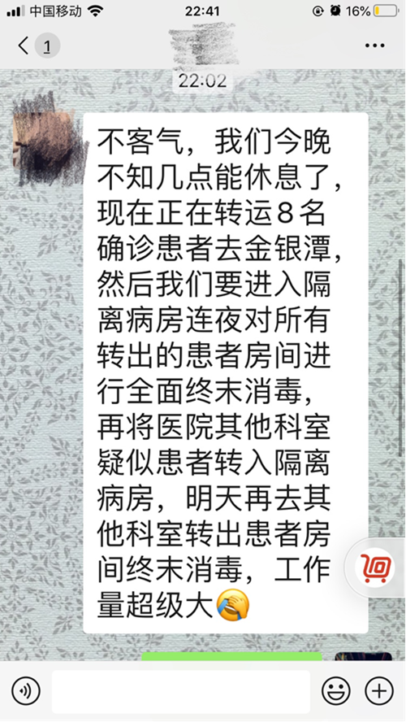
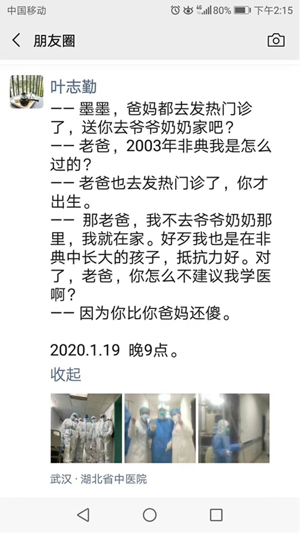

武汉“白衣天使”的跨年夜–专题-中国经营网
原文链接 备份链接 武汉“白衣天使”的跨年夜 2020-01-25 08:12 作者：张家振 来源：中国经营网 本报记者 张家振 武汉报道 1月24日，除夕夜。一段华中科技大学同济医学院附属同济医院一线医护人员的“年夜饭”触动了众多人的 …
武汉一线医护人员的除夕夜：一个人的大年三十并不孤单
2020-01-25 14:03 作者：高瑜静 曹学平 来源：中国经营网
本报记者 高瑜静 曹学平 合肥报道
农历年三十，本是阖家团圆的除夕夜，但作为首批驰援武汉市医疗救治中心（武汉市金银潭医院）的湖北省中医院护士长杨晶，却是“一个人的年夜饭，一个人的大年三十”。
“一个人的年夜饭，一个人的大年三十，却不曾感到孤单！因为有家人朋友的关心，更有医院领导和同事的问候与关怀！如果不是远处零星响起的鞭炮声，真忘记了今天是大年夜……却一丝一毫也不敢忘记在这场没有硝烟的战场上，白衣战士的责任与担当！愿上空的阴霾早日散去，艳阳高照的日子快快到来！到那时，磨山上依旧鸟语花香；绿道上依旧人流熙攘；站在黄鹤楼上看江面船来船往；你我的生活依旧如常……”除夕夜，杨晶在朋友圈感慨道。

一个人的年夜饭
自1月20日新型冠状病毒肺炎疫情传播形势严峻以来，武汉市卫健委随即组织抽调护理人员增援武汉市医疗救治中心。接到通知后，湖北省中医院医务人员纷纷主动请缨，递出了一张张申请奔赴防治一线的“请战书”。这些“请战书”的背后，是使命的召唤，是坚定的抉择，更是责任的力量。湖北省中医院于1月22日派出包括杨晶护士长在内的8位护士驰援金银潭医院。

湖北省中医院检验科卢振华1月22日写下请战书，要求到一线，额外排班
杜月月是湖北省中医院骨科的一名普通护士，她给护士长的微信内容让人泪目。
“护士长，要支援隔离病房可以先派我去，我家里没有小孩老人需要照顾的，有时间的。”
在驰援金银潭医院的同时，湖北省中医院各科室的医务人员也纷纷在院内投入到防控战斗中。从患者的个人防护、物品的消毒隔离，到病人就诊和转诊流程的优化，用实际行动践行着救死扶伤的初心和使命。据湖北省中医院相关负责人称，“医院感染管理办公室的全体医务人员几乎日夜不停，很难回家。”

湖北省中医院医务人员微信沟通截图

湖北省中医院风湿病科副主任叶志勤的朋友圈
1月24日是除夕，当晚在武汉市各医院的医生护士仍然坚守岗位，与病人一起度过除夕夜。湖北省中医院后勤保障人员为前线医务人员送去营养补给物。特别地，热心市民为医务人员送去了除夕夜蛋糕，更让医务人员心中涌起暖流。
新春钟声敲响之时，无数杨晶这样的医护人员依然坚守在岗位上，守护着人民健康。他们是最勇敢的“逆行者”，向他们致敬！
（以上图片由湖北省中医院提供）
（编辑：曹学平 校对：彭玉凤）
* 除《中国经营报》署名文章外，其他文章为作者独立观点，不代表中国经营网立场。
* 未经本网授权，任何单位及个人不得转载、摘编或以其它方式使用上述作品，违者将被追究法律责任。
* 凡本网注明“来源：中国经营网” 或“来源：中国经营报-中国经营网”的所有作品，版权均属于中国经营网（本网另有声明的除外）。
* 如因作品内容、版权和其它问题需要同本网联系的，请在30日内进行。
* 有关作品版权事宜请联系：010-88890046 邮箱：banquan@cbnet.com.cn
原文链接 备份链接 武汉“白衣天使”的跨年夜 2020-01-25 08:12 作者：张家振 来源：中国经营网 本报记者 张家振 武汉报道 1月24日，除夕夜。一段华中科技大学同济医学院附属同济医院一线医护人员的“年夜饭”触动了众多人的 …
原文链接 备份链接 武汉各大医院发热门诊的紧张态势已有一周，七家定点医院启动才两天已被压到极限。 武汉不缺顶级医院，不缺顶级专家，不缺顶级医疗能力，缺的是公共卫生防控能力、行政效率和疫情处理流程。 在患者和大医疗机构之间，未见到基层 …
原文链接 备份链接 本文约1471字 预计阅读时间4分钟 中青报·中青网武汉前方报道组 王嘉兴 大年初一，记者来到武汉市第五医院门诊大厅。接近中午12点，大厅里还排着多条长队，有的患者坐在自带的塑料小板凳上排队，所有的人都带着口罩。大厅里 …
原文链接 备份链接 希望情况尽快能得到改善 武汉医院现在防护服短缺，一线医护人员不敢吃饭、喝水、上厕所，因为医用防护服是一次性的，一旦脱下就要换新的。 本刊记者/周群峰 摄 近日来，网上有关于武汉市医务人员被感染的消息出现。武汉市某三甲医 …
原文链接 备份链接 - 这是 新世相 的第1175 篇文章 - Sayings： 大年初一，除夕过后的 24 小时，武汉封城已有 3 天。 除夕的钟声里，人们都在表达对武汉，以及整个湖北的牵挂。 为了知道更具体的信息，新世相编辑部找到了 …